Entwürfe aus concept/27-ueberarbeitung/levels, links die ganze Karte, rechts eine Nahaufnahme aus der Spielkamera. Nebel des Krieges ist für die Aufnahme aus.
Das Feld brennt schon zu Missionsbeginn, wie im Entwurf. Die Feldmitte bleibt frei, man sieht den Boden.
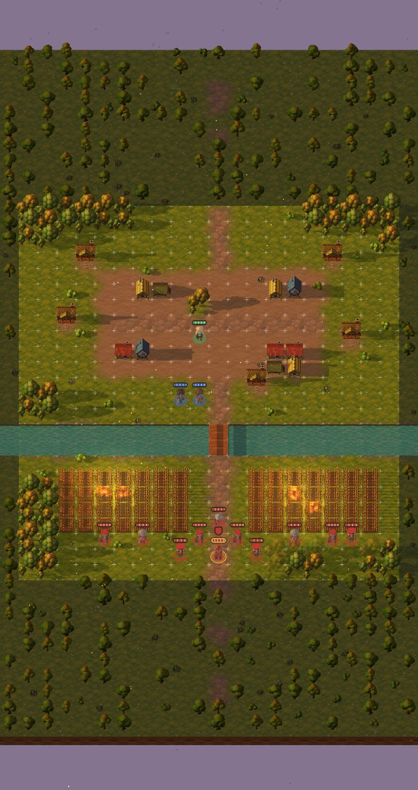
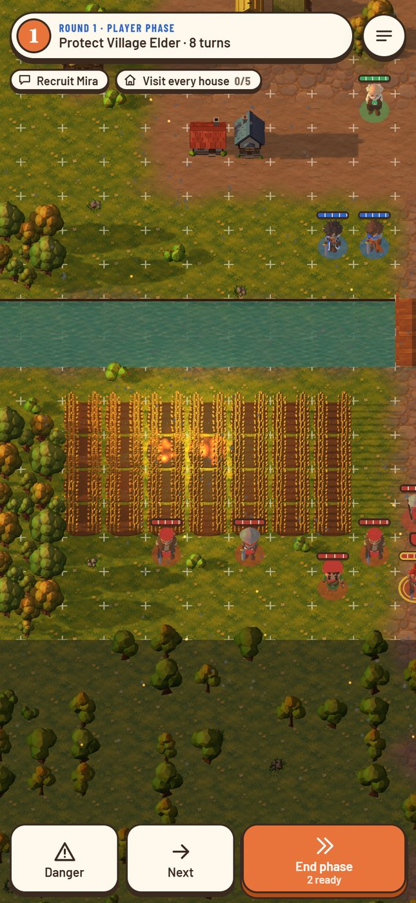
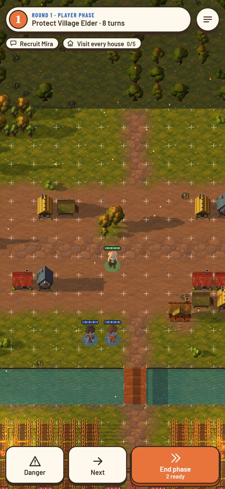
Der Wald verdeckt Figuren nicht: Was vor einer Figur steht, wird durchsichtig. Am schmalen Bach stehen die Bäume teils über dem Wasser.
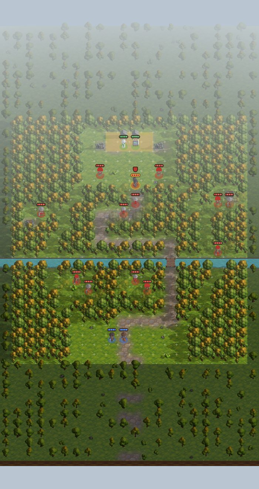
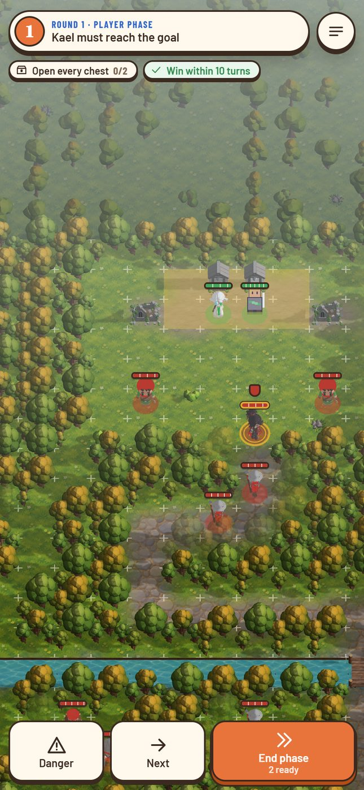
Olivgrün ist begehbarer Sumpf, fast schwarz ist der gesperrte Priel mit hohem Schilf und Seerosen.
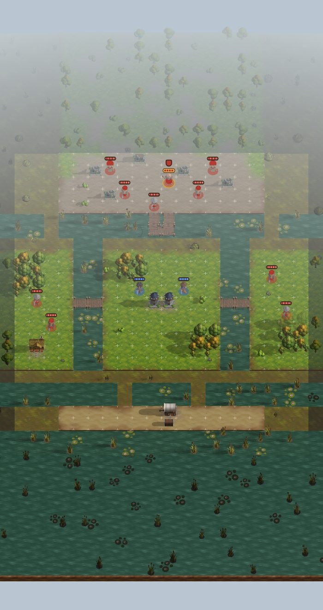
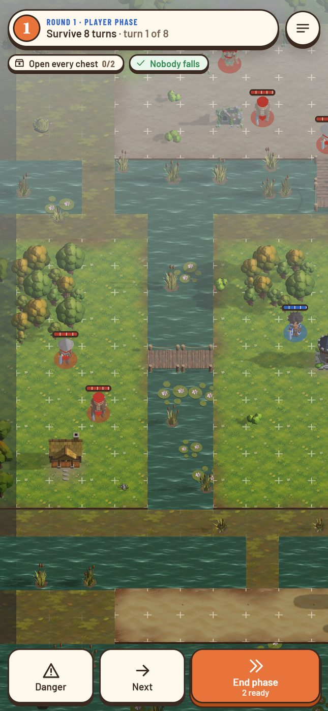
Neues Innenlicht statt Nacht, keine Büsche. Sarkophage sperren das Feld, im Entwurf standen dort begehbare Ruinen.
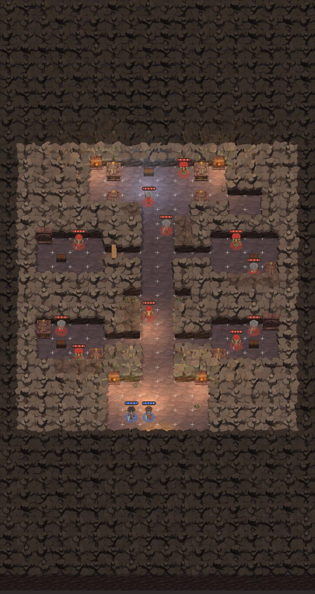
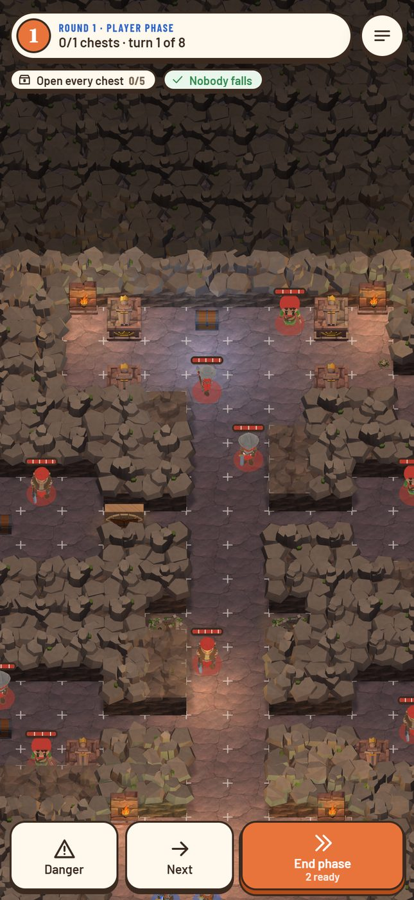
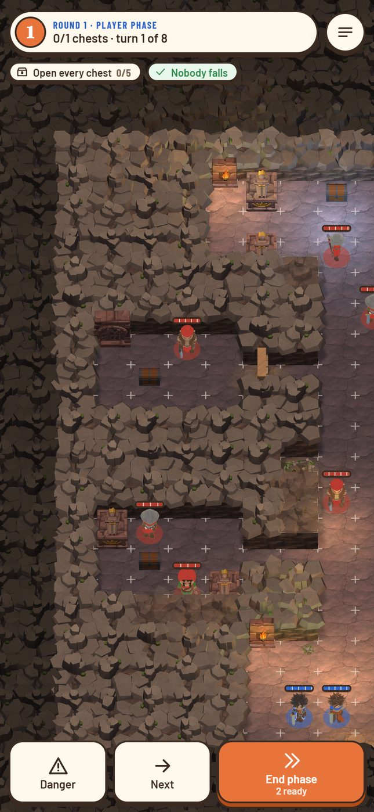
Beide zeichnet das Brett jetzt. Die Balliste steht links, der Hebel in der Mitte, beide auf der Prüfkarte hinter Fort und Haus.
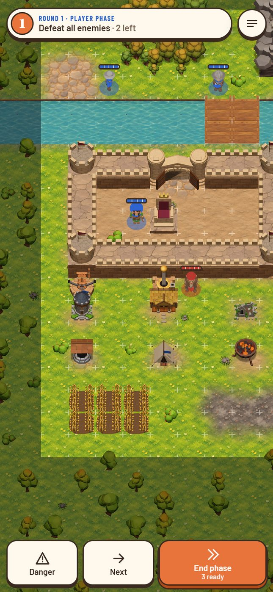
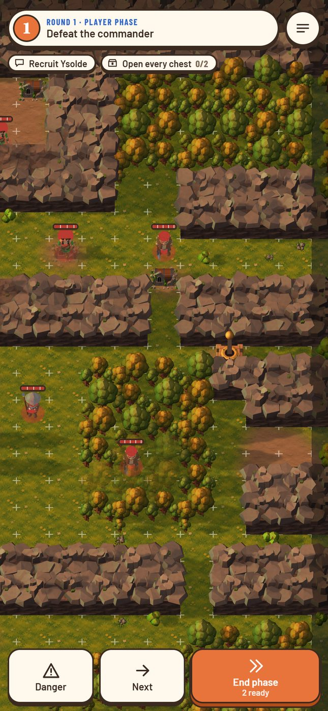